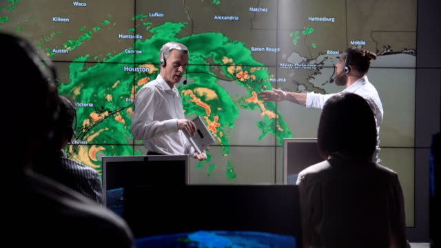

La historia de nuestra página.
Nuestra historia comenzó con un grupo de amigos apasionados por el clima y la meteorología. Nos fascinaba observar los fenómenos atmosféricos, comprender cómo se formaban las tormentas y seguir el patrón de las estaciones. Nos reuníamos regularmente para intercambiar información, analizar datos y discutir nuestras observaciones. Con el tiempo, nos dimos cuenta de que queríamos compartir nuestra pasión y conocimientos con otras personas interesadas en el clima. Decidimos crear una página web dedicada a proporcionar pronósticos precisos y recursos útiles para los entusiastas del clima. Nos propusimos ofrecer pronósticos más detallados, utilizar herramientas interactivas y brindar información específica para diferentes ubicaciones. Estudiamos y aprendimos constantemente sobre las últimas técnicas y tecnologías meteorológicas para mejorar la precisión de nuestros pronósticos.